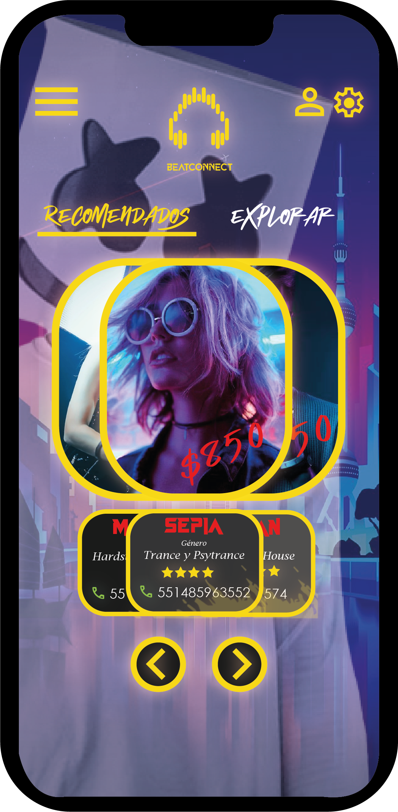

Bienvenido, acá podrás encontrar una colección de mis creaciones más visuales y creativas. Desde impactantes diseños de posters hasta detalladas infografías, pasando por cautivadores diseños de interfaces y fascinantes modelados 3D, cada proyecto gráfico refleja mi pasión por la estética visual y mi compromiso con la innovación en el diseño.
Sumérgete en un mundo de colores, formas y texturas mientras descubres la diversidad de mi trabajo en el campo gráfico. Cada proyecto es una expresión única de creatividad y técnica, diseñada para capturar la atención y transmitir mensajes de manera efectiva. Prepárate para ser sorprendido y cautivado por la creatividad y la innovación que encontrarás en cada proyecto. ¡Espero que disfrutes explorando mi trabajo tanto como yo disfruté creándolo!
Nombre de proyecto: Poster Cartel Mensaje
Tipo de proyecto: Cortometraje
Año de producción: Octubre 12 de 2023
Descripción: Durante mi carrera se nos solicitaba participar en el Congreso de Diseño donde después de ciertas conferencias nos teníamos que inscribir a talleres en donde los exponentes eran los moderadores del mismo. Yo terminé inscrito en "Fuerza para el Bien", donde el objetivo fue escoger un tema que a nosotros cómo personas nos llamará la atenció y por medio de un poster o cartel pudieramos transmitir un mensaje. Al ser un gran apasionante de la música electrónica, escogí este tema con el propósito de desarrollar un diseño o propuesta para un cartel en donde se respete y se valore a la música electrónica también como música, es decir no solo es ruido agresivo sin sentido. Este es el resultado y entre la paleta de colores y lo simple y directo que se interpreta el mensaje me fascinó como salió.
Técnicas: Vectorización
Software: Adobe Illustrator
Nombre de proyecto: Envirobot
Tipo de proyecto: Modelado 3D
Año de producción: Mayo 15 de 2023
Descripción: En mi clase de Nuevas Tecnologías e Innovación, tuvimos que hacer un proyecto en donde en un escenario en el futuro se usará una tecnología para ayudar a la gente. Nosotros nos imaginamos un mundo en donde debido a la avanzada y alta tecnología que usamos terminamos contaminando nuestro mundo y la naturaleza tal y como la conocemos se vio forzada a evolucionar, provocando atmósferas tóxicas. En base a este escenario nosotros desarrollamos un modelado de una propuesta de un kit de supervivencia de exploración, se trata de un asiatente llamado Envirobot. Envirobot es un robot que acompañaría a la persona a moverse de manera segura y sana a través de este nuevo mundo. El kit de suvervivencia cuenta con: frascos de estimulantes para aliviar dolores y curar o inhibir de manera rápida cualquier tipo de herida, pildoras con nutrientes y vitaminas para que el usuario tenga algo de alimeto que lo ayude en su viaje, un esconer para mostrar en una pantalla los niveles de toxicidad o el aire y finalmente un filtro de agua para que el viajero siempre pudiera estar hidratado.
Técnicas: Modelado y manipulación de objetos
Software: Autodesk Maya
Nombre de proyecto: KnightWatcher


Tipo de proyecto: Diseño de Interfaz
Año de producción: Mayo 16 de 2023
Descripción: En mi clase de Diseño de Interfaces durante todo el semestre tuvimos que desarrollar el diseño sobre una aplicación que nosotros nos imaginaramos, no importaba que tan realista o alocada fuera, sino era preferible que no fuera algo muy común. Dicho esto, yo desarrollé la propuesta visual sobre una apicación para convertirte en vigilante por las noches; funcionaba de la siguiente manera: primero descargabas la aplicación y te registrabas o iniciabas sesión, luego escogías al vigilante en que te gustaría convertirte, ya que habían muchas diferentes opciones de personajes con diferentes habilidades. Al seleccionar a tu héroe a ser, la idea consistiría en que mientras tu cuerpo esta descansando tu consciencia tomaría el cuerpo de este personaje y tendría hasta al amanecer para detener la mayor cantidad de crímenes posibles para ganar puntos y personalizar a estos héroes. Sin embargo, una vez que amaneciera tu tiempo se acabaría y automáticamente la aplicación te sacaría y como cualquier otro día despertarías en tu cuerpo sin ningún problema.
Técnicas: Vectorización, HeroForge y manejo de imágenes
Software: Adobe Ilustrator
Nombre de proyecto: BeatConnect
Tipo de proyecto: Diseño de Interfaz
Año de producción: Noviembre 29 de 2023
Descripsción: Para mi clase de desarrollo de apps se nos solicito para el trabajo final elaborar el diseño de la interfaz sobre una aplicación que nos gustaría crear, como fiel apasionante de la música electrónica yo decidí enfocarme en hacer una acerca de contratación de DJ's. Esta idea me surgió debido a que para un evento que había organizado en donde ya tenía contratado a un DJ me cancelo por cuestiones personales, por lo que tuve que moverme como loco para poder conseguir muchos contactos que fueran DJ's y solicitar cotizaciones para poder administrar mis números de la mejor manera. En ese momento se me ocurrió la idea sobre que padre podría ser que existiera una aplicación en donde pudieras explorar distintos rangos de Dj's con distintos tipos de música a tocar y sobre todo con la mayor cantidad posible de variación de precios. Así nació BeatConnect, una aplicación ideal y perfecta para buscar a tu DJ que mejor se adaptara a las necesidades del usuario para tus eventos, entre otras funciones existiría la posibilidad de comunicarte con estos DJ's por mensaje directo para establecer horarios y demás, los DJ's contarían con reseñas de los usuarios y con un apartado para poder formar parte de una comunidad en donde pudieran generar dstintos tipos de eventos y ampliar su portafolio de trabajo.
Técnicas: Vectorización, Sobreposición de imágenes y eliminación de fondos
Software: Ilustrator y Protopie
